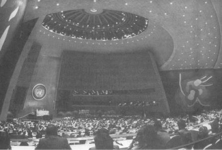

Birleşmiş Milletler Genel Kurulu
O anki bir doğa kanunuymuş gibi, her yüzyılda tüm uluslararası sistemi kendi değerlerine göre yeniden biçimlendirecek kuvvet, irade ve entelektüel ve moral güce sahip olan bir ülke ortaya çıkmaktadır. XVII. yüzyılda Kardinal Richelieu’nün yönetimindeki Fransa, uluslararası ilişkilere, ulus-devlet kavramına dayanan ve nihai amaç olarak ulusal çıkardan güç alan modern yaklaşımı getirmiştir. XVIII. yüzyılda, Büyük Britanya, sonraki 200 yıl boyunca Avrupa diplomasisine egemen olan güç dengesi kavramını geliştirmiştir. XIX. yüzyılda, Metternich’in Avusturya’sı, Avrupa Anlaşması’nı yeniden kurmuş ve Bismarck’ın Almanya’sı da Avrupa diplomasisini soğukkanlı güç politikası oyununa döndürerek bu anlaşmayı yıkmıştır.
XX. yüzyılda, uluslararası ilişkileri hiçbir ülke Birleşik Devletler kadar kesin, fakat aynı zamanda kararsız bir şekilde etkilememiştir. Hiçbir toplum, onun kadar başka devletlerin içişlerine karışmama ilkesinde ısrarlı veya kendi değerlerinin bütün dünyaca uygulanması düşüncesinde onun kadar ateşli olmamıştır. Hiçbir ülke, kendi diplomasisinin bugünden yarına uygulamasında onun kadar pragmatik veya tarihsel ahlak görüşlerinin izlenmesinde onun kadar ideolojik olmamıştır. Hiçbir devlet, örneği olmayan bir genişlikteki anlaşma ve yükümlülükler altına girerken kendi dışındaki işlerle uğraşmak konusunda onun kadar isteksiz hareket etmemiştir.
Amerika’nın, tarihi boyunca sahip olduğunu düşündüğü kendine özgü özellikler, dış politikaya karşı iki birbirine zıt tavır yarattı: Birincisi, Amerika’nın kendi değerlerine göre en iyi şekilde kendi ülkesinde demokrasiyi kusursuz hale getirip, böylece insanlığın geri kalanı için bir ışıldak olarak hizmet edebileceği görüşüdür, ikincisi ise, Amerika’nın değerlerinin, ülkeye, bunları bütün dünyaya yayma yükümlülüğü getirdiği görüşüdür. Temiz bir geçmişe hasretle, mükemmel bir geleceğe istek arasında bocalayan Amerikan düşüncesinde, her ne kadar II. Dünya Savaşı’ndan beri karşılıklı bağımlılığın gerçekleri ağır basmakta ise de, yalnızlık politikası ile yükümlülüklere girme politikası arasında bir saat rakkası gibi gidip gelmektedir.
Her iki düşünce ekolü –yani Amerika’nın aydınlatıcı bir ışıldak olması veya kendi değerlerini bütün dünyaya yayma görevi yapması– demokrasi, serbest ticaret ve uluslararası hukuka dayanan bir küresel uluslararası düzeni, normal düzen olarak öngörmektedir. Böyle bir sistem hiç var olmadığından bunun yaratılması gerekmektedir ve bu, diğer uluslara aptalca değilse bile, daima ütopik olarak görünmüştür. Ancak yabancıların şüpheciliği, Woodrow Wilson, Franklin Roosevelt yahut Ronald Reagan’ın veya XX. yüzyıldaki herhangi bir Amerikan başkanının idealizmini hiçbir zaman söndürememiştir. Bu şüpheciliğin bir etkisi olduysa, bu ancak Amerika’nın, tarihin üstesinden gelinebileceği ve dünya gerçekten barış istiyorsa, Amerikan ahlaki reçetelerini uygulamasının şart olduğuna olan inancını güçlendirmek olmuştur.
Her iki düşünce ekolü de Amerikan deneyiminin ürünleridir. Her ne kadar başka cumhuriyetler mevcut idiyse de, hiçbirisi, Amerika gibi özgürlük fikrini yüceltmek için bilinçli bir şekilde kurulmamıştır. Hiçbir ülkenin halkı, Amerikan halkı gibi özgürlük ve herkese refah sağlanması adına yeni bir kıtanın liderliğine soyunmamış ve onun vahşi doğasını terbiye etmeye kalkışmamıştır. Böylece, yalnızlık veya misyonerlik şeklindeki iki görüş, birbirinin zıttı gibi görünüyorsa da, temelde yatan ortak bir inanışı yansıtmaktadır: Birleşik Devletler, dünyadaki en iyi yönetim sistemine sahiptir ve insanlığın geri kalan bölümü, ancak geleneksel diplomasiyi terk edip, onun uluslararası hukuk ve demokrasiye olan saygısını kabul ederse, barış ve refaha kavuşabilir.
Amerika’nın uluslararası politika deneyimi, inancın deneyime karşı bir zaferi olmuştur. Amerika 1917’de dünya politikası arenasına adım attığından beri güç bakımından o kadar ağırlığını hissettirmiş ve ideallerinin doğruluğuna o kadar inanmıştır ki, Milletler Cemiyeti ve Briand-Kellogg Paktı’ndan, Birleşmiş Milletler Antlaşması ve Helsinki Nihai Senedi’ne kadar bu yüzyılın başlıca uluslararası anlaşmaları, Amerikan değerlerinin hayata geçirilmesi niteliğindedir. Sovyet komünizminin çöküşü ise, Amerikan ideallerinin entelektüel haklılığını doğrulamış ve Amerika’yı tarihi boyunca yüz yüze gelmekten kaçındığı türde bir dünya ile karşı karşıya getirmiştir. Ortaya çıkan uluslararası düzende, milliyetçilik yeni bir hayat bulmuştur. Uluslar, yüksek ilkeler yerine, daha sık olarak kendi çıkarlarının takipçisi olmuşlar ve işbirliği yapmak yerine daha çok rekabet yolunu seçmişlerdir. Bu eski davranış biçiminin değiştiğini veya ilerideki on yıllarda değişebileceğini gösteren çok az belirti vardır.
Ortaya çıkan dünya düzeninde yeni olan şey, Birleşik Devletler’in, ilk kez olarak, ne dünyadan elini eteğini çekebilmekte, ne de ona hükmedebilmekte olmasıdır. Amerika, tarihi boyunca üstlendiği rolü nasıl algıladığını değiştiremez; bunu istememelidir de. Amerika uluslararası arenaya girdiği zaman yeniydi, kuvvetliydi ve uluslararası ilişkilere bakış biçimini dünyaya kabul ettirme gücü vardı. 1945’te II. Dünya Savaşı son bulduğunda, Amerika o kadar güçlüydü ki (bütün dünya ekonomik üretimin %35’i Amerika’ya aitti) dünyaya, kendi tercihlerine göre şekil vermesi kaçınılmaz görünüyordu.
1961’de John F. Kennedy, Amerika’nın, özgürlüğün başarısı için “her bedeli ödeyecek, her yükü çekecek kadar” kuvvetli olduğunu söyledi. Otuz yıl sonra, Birleşik Devletler bütün isteklerinin hemen gerçekleştirilmesi için ısrarlı olacak bir konumda değildir. Diğer ülkeler büyüyerek Büyük Devlet statüsüne kavuştular. Artık Birleşik Devletler, amaçlarını, her biri Amerikan değerleri ve jeopolitik gerekliliklerin birer karışımı olan aşamalarla gerçekleştirmenin zorluklarıyla karşı karşıyadır. Yeni gerekliliklerden birisi, birbirine denk güçte birçok devletten oluşan bir dünyanın düzenini, bir tür denge kavramı üzerine oturtmak zorunda olmasıdır ki, Amerika, hiçbir zaman bu fikri rahatlıkla içine sindirememiştir.
Dış politikaya ilişkin Amerikan düşünce biçimi ile Avrupa diplomatik gelenekleri, 1919 Paris Barış Konferansı’nda karşı karşıya gelince, tarihi deneyimdeki farklılıklar, dramatik bir şekilde ortaya çıkmıştır. Avrupalı liderler, var olan sistemi bilinen yöntemlerle tekrar kurmak isterken, Amerikan barış kurucuları, Büyük Savaş’ın başa çıkılması zor jeopolitik uyuşmazlıkların değil, Avrupa’nın kusurlu uygulamalarının sonucu olduğuna inanmaktadırlar. Meşhur On dört Nokta’sında Woodrow Wilson, bundan böyle uluslararası sistemin güç dengesine değil, etnik self-determinasyon prensibine, devletlerin güvenliklerinin askeri anlaşmalara değil, ortak güvenlik sistemine ve diplomasilerinin de uzmanlar tarafından gizlice yürütülmeyip, “açıkça varılan antlaşma” esaslarına dayandırılmasını Avrupalılardan istemiştir. Açıkça görülüyor ki Wilson, Paris’e, savaşı sona erdirme şartlarını tartışmak veya var olan uluslararası düzeni yeniden kurmak için değil, hemen hemen üç yüzyıldan beri uygulanan bütün uluslararası ilişkiler sistemini değiştirmek için gelmişti.
Amerikalılar, dış politika hakkında düşünmeye başladıklarından beri, Avrupa’nın çektiği sancılan, hep güç dengesi sistemine bağlamışlardır. Avrupa’nın da, Amerikan dış politikası ile ilk kez ilgilenmek zorunda kaldığı zamandan beri, Avrupalı liderler, Amerika’nın kendine tanıdığı küresel reform misyonuna kuşku ile bakmışlardır. Her iki taraf da, sanki diğer taraf diplomatik davranış biçimini serbestçe seçmiş ve daha akıllıca veya saldırgan, sanki daha kabul edilebilir başka bir davranış biçimi seçebilirmiş gibi davranmıştır.
Gerçekte, dış politikaya Amerika’nın ve Avrupa’nın yaklaşımları, kendi koşul ve çevrelerinin ürünüdür. Amerikalılar, yağmacı güçlerden iki geniş okyanusla korunmuş ve zayıf ülkelerle komşu olan hemen hemen boş bir kıtaya yerleşmişlerdir. Amerika, denge kurulmasını gerektiren herhangi bir güçle karşılaşmadığından, liderleri de, Avrupa koşullarını tekrarlamak gibi garip bir fikre saplansalar bile, arkasını Avrupa’ya dönmüş bir halk topluluğu arasında denge sorunlarıyla ilgilenemezlerdi.
Avrupa uluslarına acı çektiren güvenlik konusundaki çıkmazlar, Amerika’da yüz elli yıl boyunca hemen hemen hiç hissedilmemiştir. Hissedildiği zaman ise, Amerika Avrupa ülkeleri tarafından çıkarılan dünya savaşlarına iki kez girmiştir. Amerika’nın her savaşa girişinde, güç dengesi, daha evvel işlemez hale gelmiş ve şu paradoksu yaratmıştır: Birçok Amerikalının beğenmediği güç dengesi, kuruluş maksadına uygun çalıştığı sürece, Amerika’nın güvenliğini sağlamış ve çalışmayınca da Amerika’yı uluslararası politikaya çekmiştir.
Avrupa ulusları, güç dengesi politikasını, doğuştan var olan kavgacılıkları veya Eski Dünya’nın entrika düşkünlüğü nedeniyle ilişkilerini düzenleme aracı olarak seçmiş değildir. Demokrasiye önem verme ve uluslararası hukuk, Amerika’nın kendine özgü güvenlik duygusunun bir sonucu ise, Avrupa diplomasisi de döğülerek şekil verilen demir gibi zorluk altında biçim almıştır.
Avrupa, ilk tercihi olan Ortaçağ’ın dünya imparatorluğu rüyası çökünce ve eski hayalin külleri içinden aşağı yukarı birbirine denk güçte devletler ortaya çıkınca, ister istemez güç dengesi politikasını kabul etmek zorunda kalmıştır. Bu şekilde kurulan bir grup devlet, birbiriyle uğraşmak zorunda kalınca yalnızca iki olasılık ortaya çıktı: Ya bu devletlerden birisi, çok güçlenerek diğerlerini egemenliği altına alacak ve bir imparatorluk yaratacaktır veya hiçbir devlet bu amacı gerçekleştirecek kadar güçlenemeyecektir. İkinci olasılıkta, uluslararası topluluğun en saldırgan üyesinin istekleri diğer devletlerin bir araya gelmesiyle, başka bir deyişle, güç dengesi yoluyla kontrol altında tutulmuştur.
Güç dengesi sistemi, krizleri, hatta savaşları önlemek iddiasında değildir. Düzgün işlediği zaman, hem bir devletin diğerlerini egemenliği altına alma arzusunu, hem de anlaşmazlıkları sınırlamak amacındadır. Bu sistemin amacı barıştan çok istikrarın ve aşırılıklardan kaçınmanın sağlanmasıdır. Bir güç dengesi düzenlemesi, tanımı gereği uluslararası sistemin her üyesini tatmin edemez. Fakat hoşnut olmayan tarafın hoşnutsuzluğu, uluslararası düzeni bozmaya kalkışacağı düzeyin altında kaldığı sürece, sistem en iyi şekilde çalışmış demektir.
Güç dengesi teorisyenleri, bu sistemin, uluslararası ilişkilerin doğal şekli olduğu izlenimini yaratmaktadırlar. Gerçekte, insanlık tarihinde güç dengesi sistemleri çok seyrek olarak yer almıştır. Batı yarımküresinde hiç görülmemiştir; çağdaş Çin topraklarında ise, iki bin yıl önceki savaşçı devletler devrinden beri güç dengesi sistemi olmamıştır, insanlığın büyük bölümü ve tarihin en uzun devreleri için tipik devlet modeli, imparatorluktur, imparatorluklar ise, uluslararası sistem içinde hareket etmeye ilgi duymazlar, bizzat kendileri uluslararası sistem olmak çabası içindedirler, imparatorlukların güç dengesine gereksinimi yoktur. Birleşik Devletler, Asya’da Amerikalarda ve Çin tarihinin çoğu döneminde dış politikalarını böyle yürütmüştür.
Batı’da güç dengesi sistemlerinin uygulandığı örneklere, eski Yunanistan’ın ve Rönesans İtalya’sının şehir devletleri arasındaki sistemde ve 1648 Vestfalya Barış Antlaşmasının ortaya çıkardığı Avrupa devlet sisteminde rastlanır. Bu sistemlerin ayırıcı özelliği, birbirine denk güçte devletlerin var olması gerçeğini yücelterek, dünya düzeni için yol gösteren bir ilke haline getirmek olmuştur.
Entelektüel olarak da güç dengesi kavramı, Aydınlanma Döneminin belli başlı politik düşünürlerinin inançlarını yansıtmaktadır. Bu düşünürlerin görüşlerine göre, politik dünya dâhil, tüm evren, her biri diğerini dengeleyen akılcı prensiplere göre yönetilmektedir. Mantıklı insanlar tarafından görünüşte rastlantısal olarak yapılan eylemler, sonunda ortak iyiliğe dönüşmektedir. Otuz Yıl Savaşları’nı izleyen neredeyse sürekli anlaşmazlıklarla dolu yüzyılın ise, bu görüşü desteklediği pek söylenemez.
Adam Smith, Ulusların Zenginliği (The Wealth of Nations) kitabında, “görünmeyen bir elin” bencil kişisel ekonomik eylemleri damıtarak, bunu genel ekonomik refaha dönüştürdüğünü söylemektedir. Madison, Federalist Yazılar’da, kendi çıkarlarını bencilce savunan birçok politik “hizbin”, yeterince büyük bir cumhuriyette, sonunda bir çeşit otomatik mekanizma yoluyla bir iç uyum yaratabileceğini savunmuştur. Montesquieu tarafından algılandığı ve Amerikan Anayasası’nda somutlaştığı biçimiyle, kuvvetler ayrılığı ve kontrol ve denge (checks and balances) kavramları da aynı görüşü yansıtmaktadır. Kuvvetler ayrılığından maksat, uyumlu bir yönetime ulaşmak değil, diktatörlüğü önlemektir; hükümetin her kanadı kendi çıkarını takip ederken aşırılıkları sınırlar ve böylece ortak iyiliğe hizmet eder. Aynı prensipler, uluslararası ilişkilere de uygulanacaktı. Kendi bencil çıkarlarını savunan her devletin, sanki seçme özgürlüğü sağlanınca görünmeyen bir el herkesin refahını garanti ediyormuş gibi, ilerlemeye katkıda bulunacağı varsayılıyordu.
Bir yüzyıl boyunca, bu beklenti gerçekleşmiş görünmektedir. Fransız Devrimi ve Napoleon Savaşları’nın sebep olduğu karışıklıktan sonra, Avrupa liderleri güç dengesini 1815 Viyana Kongresi ile sağladılar ve uluslararası işbirliğini ahlaki ve hukuki bağlarla daha ılımlı hale getirerek, kaba kuvvete olan güveni de yumuşattılar. Bununla beraber, XIX. yüzyılın sonuna kadar Avrupa güç dengesi sistemi, yeniden güç politikasının ilkelerine dönerek daha da acımasız bir çevre yarattı. Düşmanını küstahlıkla sindirmek, diplomasinin geçerli metodu haline geldi ve kuvvet gösterileri birbirini izledi. Sonunda 1914’te kimsenin bir adım geri atamayacağı bir kriz doğdu. I. Dünya Savaşı felaketinden sonra, Avrupa hiçbir zaman dünya liderliğini tekrar elde edemedi. Birleşik Devletler diplomaside egemen oyuncu olarak sahneye çıktı fakat Woodrow Wilson, ülkesinin oyunu, Avrupa kurallarına göre oynamayı reddettiğini açıkça belirtti.
Birleşik Devletler, tarihinde hiçbir zaman bir güç dengesi sistemine katılmadı, iki dünya savaşından önce, Amerika, güç dengesinin diplomatik manevralarından uzak durup, canı istediğinde bunu eleştirmenin keyfini de çıkarırken, güç dengesinden yararlandı. Soğuk Savaş sırasında, Amerika Sovyetler Birliği ile güç dengesi sisteminden büsbütün farklı prensiplerin geçerli olduğu iki kutuplu bir dünyada ideolojik, politik ve stratejik bir savaşıma girdi, iki kutuplu bir dünyada, çatışmanın ortak iyiliğe hizmet ettiği hiçbir şekilde ileri sürülemez; bir tarafın kazancı, öbür tarafın kaybıdır. Amerika Soğuk Savaş’ta, savaş yapmadan zaferi gerçekleştirmiştir. Öyle bir zafer ki, şimdi Amerika’yı George Bernard Shaw’un söylediği çıkmazla karşı karşıya getirmektedir: “Hayatta iki trajedi vardır: Biri gönlünün istediğine kavuşamamak, diğeri de ona kavuşmaktır.”
Amerikan liderleri, kendi değerlerini o kadar doğal bir şeymiş gibi kabul etmişlerdir ki, bu değerlerin başkalarına ne kadar devrimci ve her şeyi yerinden oynatacak nitelikte göründüğünü kavrayamamışlardır. Ahlaka uygun hareket etme ilkesinin uluslararası uygulamalarda da tıpkı bireyler arasında olduğu gibi geçerli olduğunu başka hiçbir toplum ileri sürmemiştir ki, bu fikir Richelieu’nün (raison d’état) Ulusal Güvenlik Çıkarının tam karşıtıdır. Amerika’ya göre, savaşı önlemek diplomatik meydan okuma olduğu kadar, hukuki bir sorundur ve Amerika’nın karşı çıktığı bu tür bir değişme olmayıp, değişmenin sağlandığı yöntem, özellikle de kuvvet kullanmadır. Bir Bismarck veya bir Disraeli, dış politikanın, içerikten çok yönteme ilişkin olduğu fikrini eğer anlayabilselerdi, bunu çok saçma bulurlardı. Dünyada hiçbir ulus, Amerika kadar kendini ahlaki değerlerle bağlamış değildir. Dünyada başka hiçbir ülke, tanımı gereği mutlak olan değer yargıları ile bunların uygulanması gereken somut durumlar arasındaki boşluğu doldurmak için kendine bu kadar eziyet etmemiştir.
Soğuk Savaş boyunca Amerika’nın dış politikaya yaklaşımı, var olan soruna hayret edilecek bir şekilde uygun düşüyordu. Derin bir ideolojik çatışma vardı ve yalnız bir ülke, Birleşik Devletler, komünist olmayan dünyanın savunmasını organize etmek için politik, ekonomik ve askeri tüm araçlara sahipti. Böyle bir konumdaki bir ulus, görüşlerinde ısrarlı olabilir ve daha az önemli ulusların devlet adamlarıyla ters düşme probleminden de çoğunlukla kaçınabilir: Bu devletlerin sahip oldukları araçlar, onların umutlarına göre daha az ihtiraslı amaçlar izlemelerini ve bu amaçlara bile aşamalar halinde yaklaşmalarını zorunlu kılar.
Soğuk Savaş dünyasında geleneksel güç kavramı kökünden yıkıldı. Genellikle tarih, çoğu zaman birbiriyle simetrik olan bir askeri, siyasi ve ekonomik güç sentezi göstermiştir. Soğuk Savaş devrinde gücün farklı elemanları birbirinden oldukça bağımsız bir hale geldi. Eski Sovyetler Birliği, askeri bir süper güç iken, ekonomik bakımdan bir cüceydi. Yine Japonya örneğinde olduğu gibi bir ülke ekonomik bakımdan bir dev iken, askeri bakımdan adı bile geçmeyebilirdi.
Soğuk Savaş sonrası dünyada, gücün çeşitli unsurlarının, daha uyumlu ve daha simetrik bir şekilde büyümeleri almaları olasıdır. Birleşik Devletler’in göreceli askeri gücü zamanla azalacaktır. Belirgin bir düşmanın olmaması, kaynakların savunmadan diğer öncelikli alanlara doğru yönelmesi için iç baskıları ortaya çıkaracaktır ki, bu süreç halen başlamış durumdadır. Tek bir tehdit olmadığı zaman, her ülke kendisine yönelen tehlikeleri, kendi ulusal perspektifi içinde kavrayacak, Amerikan koruması altında yaşayan ülkeler, kendi güvenlikleri için daha büyük sorumluluk yüklenme zorunluluğunu hissedeceklerdir. Böylece yeni uluslararası sistem, bunun gerçekleşmesi birkaç on yılı alabilirse de askeri alanda bile bir dengeye doğru işleyecektir. Bu eğilimler, Amerikan egemenliğinin gittikçe azaldığı ekonomi alanında daha da belirgin olacak ve Birleşik Devletler’e meydan okuma daha güvenli sayılacaktır.
XXI. yüzyılın uluslararası sistemi, görünüşte bir karşıtlıklar sistemi olacaktır: Bir tarafta bölünmeler, diğer tarafta ise, giderek artan küreselleşme. Devletler arasındaki ilişkiler düzeyinde ise, yeni düzen, Soğuk Savaş’ın kati kalıplarından çok XVIII. ve XIX. yüzyıl Avrupa devlet sistemine benzeyecektir. Yeni düzen, en az altı büyük güçten –Birleşik Devletler, Avrupa, Çin, Japonya, Rusya ve olasılıkla Hindistan– ve küçük ve orta büyüklükteki birçok devletten oluşacaktır. Aynı zamanda uluslararası ilişkiler ilk kez gerçekten küreselleşmiş olmaktadır. Günümüzde haberleşme anında yapılmakta, dünya ekonomisi bütün kıtalarda eş zamanlı olarak işlemektedir. Nükleer yayılma, çevre, nüfus artışı ve ekonomik karşılıklı bağımlılık gibi ancak tüm dünya bazında çözümlenebilecek yeni bir sorunlar dizisi su yüzüne çıkmıştır.
Amerika için, önemli ülkeler arasındaki çok farklı tarihi deneyimleri ve farklı değerleri uzlaştırmak yeni bir deneyim ve aynı zamanda geçen yüzyılın yalnızlık politikalarından ve Soğuk Savaş’ın de facto hegemonyasından temel bir ayrılış olacaktır ki, bu kitabın aydınlatmaya çalıştığı konu da bu ayrılıştır. Aynı ölçüde diğer belli başlı oyuncular da, yeni ortaya çıkan dünya düzenine uyum sağlama güçlükleriyle karşı karşıyadırlar.
Modern dünyanın çok devletli bir sistemi işleten tek parçası olan Avrupa, ulus-devlet, egemenlik ve güç dengesi kavramlarını yaratmıştır. Bu kavramlar üç yüzyılın büyük bölümünde uluslararası uygulamalara egemen olmuştur. Ancak artık Avrupa’nın eski raison d’état uygulayıcılarından hiçbirisi ortaya çıkan yeni uluslararası düzende önemli rol alacak kadar güçlü değildirler. Bu göreceli zayıflıklarını dengelemek için birleşmiş tek bir Avrupa yaratmaya çalışmaktadırlar ki, bu çaba enerjilerinin büyük bölümünü tüketmektedir. Başarılı olsalar bile küresel sahnede birleşmiş tek Avrupa’nın küresel sahnede işlemesi için hazır, otomatik olarak uygulanabilecek bir kılavuz yoktur; çünkü daha önce böyle bir siyasi oluşum hiçbir zaman var olmamıştır.
Bütün tarihi boyunca Rusya özel bir durum oluşturdu. Rusya, Fransa ile Büyük Britanya, durumlarını sağlamlaştırdıktan çok sonra, Avrupa sahnesine girmiş ve Avrupa diplomasisinin geleneksel prensiplerinden hiçbirisi onun için geçerli olmamıştır. Üç farklı kültür alanına komşu olan Rusya –Avrupa, Asya ve İslam Dünyası–, bu üç grup insandan oluşan nüfusu ile hiçbir zaman Avrupa’nın anladığı anlamda bir ulus-devlet olamamıştır. Yöneticileri tarafından komşu ülkelerin toprakları, kendi topraklarına katılan ve bu suretle devamlı sınırları değişen Rusya, herhangi bir Avrupa ülkesi ile kıyaslanamaz büyüklükte dev bir imparatorluk olmuştu. Üstelik, her yeni fetihle topraklarına yeni, huzursuz ve Rus olmayan âsi etnik gruplar katılmış ve devletin karakteri de değişmiştir. Rusya’nın kendisini, dış güvenliğine yönelebilecek olası bir tehditle ilgisi olmayan büyüklükte dev ordular beslemek zorunda hissetmesinin nedenlerinden birisi de budur.
Saplantılı güvensizlik duygusu ile coşku ve Avrupa istekleri ile Asya’nın çekici yönleri arasında bocalayan Rusya, Avrupa dengesinde her zaman bir rol almıştır; fakat duygusal olarak hiçbir zaman onun bir parçası olmamıştır. Fetih ve güvenlik gereksinimleri, Rus liderlerin kafasında birleşmiştir. Viyana Kongresi’nden bu yana Rusya imparatorluğu, silahlı kuvvetlerini, diğer önemli devletlerden daha sık bir şekilde yabancı topraklarda tutmuştur. Analizciler çoğu zaman Rus yayılmacılığını güvensizlik duygusuna yormaktadır. Fakat Rus yazarlar Rusya’nın dış dünyaya doğru baskısını bir nevi misyonerlik hizmeti olarak görmüşlerdir. İlerleyen Rusya, nadir olarak bir sınır duygusuna sahip olmuş ve hareketi önlenince de kızgınlık göstermiştir. Tarihi boyunca Rusya her zaman fırsat kollayan bir devlet konumunda olmuştur.
Komünizm sonrası Rusya, kendisini tarihte benzeri olmayan sınırlar içinde bulmuştur. Avrupa gibi Rusya da, enerjisinin çoğunu kimliğini yeniden tanımlamaya harcayacaktır. Acaba tarihi ritmine dönme ve kaybettiği imparatorluğunu yeniden kurma arayışı içinde olacak mı? Ağırlık merkezini doğuya kaydıracak ve Asya diplomasisinde daha aktif bir rol alacak mı? Hudutları çevresindeki ve özellikle de çalkantılı Ortadoğu’daki karışıklıklara karşı hangi prensip ve metotlarla tavır alacak? Rusya dünya düzeni için her zaman gerekli olacaktır ve bu sorulara verilecek cevaplarla bağlantılı olarak ortaya çıkacak kaçınılmaz karmaşada, dünya düzenine karşı potansiyel bir tehdit de oluşturacaktır.
Çin de, kendisi için yeni olan bir dünya düzeni ile yüz yüzedir, iki bin yıl boyunca Çin imparatorluğu, kendi dünyasını tek bir imparatorluk egemenliği altında birleştirmiştir. Bu egemenlik zaman zaman aksamıştır da. Çin’de savaşlar, Avrupa’da olduğu kadar sık olmuştur. Fakat bu savaşlar, imparatorluk üzerinde iddia sahibi kimseler arasında olduğu için, uluslararası savaştan çok, iç savaş niteliğinde olmuş ve er veya geç yeni bir merkezi gücün ortaya çıkmasıyla sonuçlanmıştır.
Çin, XIX. yüzyıldan önce, hiçbir zaman kendisine kafa tutacak güçte bir komşuya sahip olmamıştır ve böyle bir devletin ortaya çıkabileceğini de düşünmemiştir. Dışarıdan gelen işgalciler Çinli hanedanları devirmişlerdir; ancak Çin kültürü içinde öyle bir şekilde kaybolmuşlardır ki, sonunda Orta Krallık geleneklerini devam ettirmişlerdir. Çin’de devletlerin eşit bağımsızlığı fikri hiçbir zaman var olmamıştır; yabancılar barbar kabul edilir ve yalnızca ikinci sınıf bir ilişkiye tâbi tutulurdu. –XVIII. yüzyılda İngiliz Sefiri Beijing de böyle kabul edilmiştir.– Çin, dışarıya elçi göndermeyi küçümseyerek bakmıştır; fakat uzaktaki barbarları yakındaki barbarların hakkından gelmek için kullanmada bir sakınca görmemiştir. Ancak bu uygulama olağanüstü durumlar için geçerli olan bir stratejiydi; Avrupa güç dengesi gibi işleyen günlük bir sistem değildi ve Avrupa’nın ayırıcı özelliği olan devamlı diplomatik temsilcilikler kurulması sonucunu da doğurmadı. Çin XIX. yüzyılda Avrupa sömürgeciliğinin aşağılanan bir süjesi olduktan sonra, tarihinde görülmemiş bir şekilde son yıllarda yeniden II. Dünya Savaşı’ndan bu yana çok kutuplu dünya sisteminde ortaya çıkmıştır.
Japonya da kendisini dış dünyayla olan bütün ilişkilerden uzak tutmuştu. Japonya, 1854’te Kaptan Matthew Perry tarafından açılana kadar, geçen beş yüzyıl boyunca, ne barbarları birbirlerine karşı dengelemeye, ne de onlar için Çinlilerin yaptığı gibi ikinci sınıf ilişkiler yaratmaya tenezzül etmişti. Dış dünyadan soyutlanmış olan Japonya, kendine özgü gelenek ve göreneklerinden gurur duymuş, askeri geleneğini iç savaşlarla tatmin etmiş, iç yapısını ise, kültürünün dış tesirlerden hiçbir şekilde etkilenmeyeceği, kendi kültürünün üstün olduğu ve diğer kültürleri özümlemek yerine, onları bir gün yeneceği inancına dayandırmıştır.
Soğuk Savaş sırasında Sovyetler Birliği, kendisi için sürekli bir güvenlik tehdidi oluştururken, Japonya dış politikasını binlerce mil ötedeki Amerika’yla birlikte tanımlayabilmiştir. Sorunlarının bolluğuyla yeni dünya düzeni, geçmişiyle bu derece gurur duyan bu ülkeyi, tek bir müttefike dayanma politikasını yeniden gözden geçirmeye mecbur edecektir. Japonya, Asya güç dengesine karşı Amerika’dan daha hassas olmak zorundadır. Çünkü farklı bir yarımkürede üç değişik yöne bakmaktadır –Atlantik’e, Pasifik’e ve Güney Amerika’ya–. Japonya için, Çin, Kore ve Güneydoğu Asya, Birleşik Devletler’den daha farklı bir önem kazanacak ve Japonya, daha bağımsız ve daha kendine has bir dış politika başlatacaktır.
Güney Asya’da büyük bir güç olarak ortaya çıkan Hindistan’a gelince, bu ülkenin dış politikası pek çok yönüyle Avrupa sömürgeciliğinin en iyi günlerinin son izlerini taşımakta ve eski kültürün gelenekleri ile yoğrulmuş bulunmaktadır, İngilizlerin gelişinden önce, bu ülke, bin yıldır tek bir politik birlik olarak yönetilmemiş durumdadır, İngilizlerin sömürgeleştirmesi küçük askeri kuvvetlerle gerçekleştirilmiştir. Çünkü, her şeyden önce yerel halk, bu kuvvetleri, bir grup işgalcinin yerini, yeni bir grup işgalcinin alması olarak görmüştür. Ancak tek bir yönetim kurulduktan sonra, Hindistan’a kendisinin getirdiği halk hükümeti ve kültürel milliyetçilik değerleri, İngiliz İmparatorluğu’nun altını oymuştur. Bununla beraber, bir ulus-devlet olarak Hindistan dünya sahnesine yeni çıkan bir devlettir. Büyük nüfusunu doyurma savaşı ile uğraşan Hindistan, Soğuk Savaş esnasında Bağlantısızlık hareketi ile kendini oyalamıştır. Fakat artık uluslararası politika sahnesinde büyüklüğüyle uyumlu bir rol alması gerekmektedir.
Sonuçta, yeni dünya düzenini kurmaları gereken en önemli ülkelerin hiçbirisinin ortaya çıkmakta olan çok devletli sistem konusunda deneyimi yoktur. Daha evvel hiç bu kadar çok sayıda farklı algılama biçimini bir araya getirmesi gereken veya bu kadar küresel çapta bir yeni dünya düzeni kurulmamıştır. Bunun gibi, daha önceki düzenlerden hiçbirisi küresel demokratik düşüncelerle ve çağımızın hızla gelişen teknolojisi ile tarihten gelen güç dengesi sistemlerinin özelliklerini bir araya getirmek zorunda olmamıştır.
Geçmişe bakacak olursak, bütün uluslararası sistemlerin kaçınılmaz bir simetrileri olduğunu görürüz. Bu sistemler bir kez kurulunca başka tercihler yapılmış olsaydı, tarihin nasıl bir gelişme göstereceğini veya diğer tercihlerin yapılmasının olası olup olmadığını saptamak çok zordur. Bir uluslararası düzen ilk oluştuğu zaman birçok tercih yolu henüz açıktır. Fakat yapılan her tercih, geri kalan seçenekler evrenini daraltır. Karmaşıklık, esnekliği azalttığı için bu ilk tercihler hayati önem taşır. Uluslararası düzenin Viyana Kongresi’nden sonra ortaya çıkan düzen gibi kararlı mı, yoksa Vestfalya Barış Antlaşması ve Versay Antlaşmalarından sonra ortaya çıkan düzenler gibi son derece değişken mi olacağı sorunu, kurucu toplumların âdil kabul ettikleri şartlarla kendilerini güvende hissetmelerini sağlayan şartları birbiriyle uzlaştırabilme derecelerine bağlıdır.
Oluşan sistemlerin en istikrarlıları olan Viyana Kongresi sistemi ile II. Dünya Savaşı’ndan sonra Birleşik Devletler’in empoze ettiği sistem, aynı algılama biçimlerine sahip olma avantajına sahiptirler. Viyana’daki devlet adamları, kavranması zor olan konuları aynı şekilde gören ve esas noktalarda anlaşmaya varmış olan aristokratlardı; savaş sonrası dünyasını şekillendiren Amerikan liderleri ise, olağanüstü dayanışma ve yaşama gücü gibi bir entelektüel geleneğe sahip bir topluluk içinden çıkmışlardır.
Şimdi ortaya çıkmakta olan düzen, büyük ölçüde farklı kültürleri temsil eden devlet adamları tarafından kurulmak zorundadır. Bu devlet adamları, o kadar karmaşık ve dev bürokrasi orduları yönetmektedirler ki, enerjilerinin çoğu amaçların belirlenmesi çabası içinde değil, yönetim mekanizmasında tüketilmektedir. Bu devlet adamları, yönetim için gerekli olmayan ve uluslararası bir düzen kurmaya daha da az uygun olan yetenekleri ile yükselmektedirler. Elde bulunan yegâne çok devletli sistem modeli ise, Batı toplumları tarafından kurulmuş olandır ve katılanların birçoğu da bu modeli reddedebilir.
Yine de Vestfalya Barış Antlaşması’ndan günümüze kadar olan ve birçok devlete dayanan dünya düzenlerinin yükselişi ve çöküşü, çağdaş devlet adamlarının karşı karşıya bulunduğu sorunları anlamaya çalışırken örnek alınabilecek tek deneyimdir. Tarih çalışmaları gösteriyor ki, otomatik olarak uygulanabilecek bir el kitabı yoktur. Tarih, karşılaştırma yoluyla birbirlerine benzer durumların olası sonuçları üzerine ışık tutar. Fakat her kuşak hangi durumların karşılaştırılabilir olduğuna da kendisi karar vermelidir.
Entelektüeller uluslararası sistemlerin çalışmasını analiz ederler; devlet adamları ise, bu sistemleri kuran kişilerdir. Bir analistin bakış açısı ile bir devlet adamının bakış açısı arasında büyük farklılık vardır. Analist hangi sorunu inceleyeceğini kendisi seçebilir; devlet adamı ise sorunları önünde bulur. Analist açık bir sonuca varmak için ne kadar zaman gerekiyorsa o kadar zaman kullanabilir; devlet adamı için asıl sorun zamanın darlığıdır. Analist üzerine risk almaz. Vardığı sonuçlar yanlış çıkarsa, başka bir inceleme yazabilir. Devlet adamı ise, bir tek tahmin yapma hakkına sahiptir; yaptığı yanlışlardan geri dönüş yoktur. Analistin elinde bütün bilgiler vardır ve bunlar analistin entelektüel gücüne göre değerlendirilir. Devlet adamı ise, doğruluğu henüz kanıtlanmamış tahminlere göre karar verir; kaçınılmaz değişimi ne derece akıllıca yönlendirdiğine ve her şeyden önce barışı ne kadar iyi koruduğuna göre tarih tarafından değerlendirilir. İşte bu yüzden devlet adamlarının dünya düzeni sorunu ile ne kadar başarılı veya başarısız bir şekilde ilgilendiklerini araştırmak, çağdaş diplomasiyi anlamanın sonu değil, belki de başlangıcıdır.